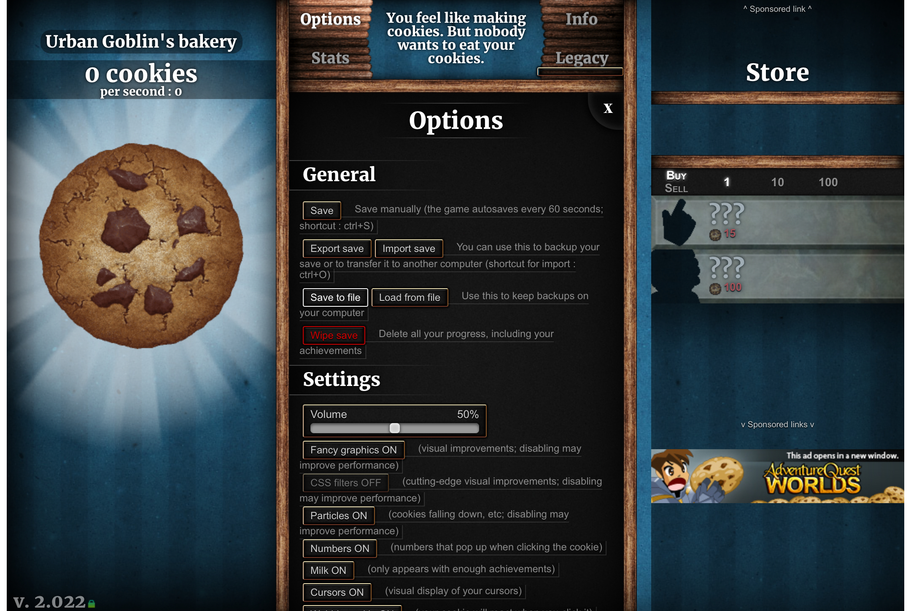

You are about to go into Tunnel rush.
Continue to cookie clicker Go back home Evacuate (testing)Cookie clicker supports game saves.
Press options and press "Save to file"

To load your game, then press "Load from file", after that then press "Choose file" and select your save. I suggest deleting your previous saves to avoid confusion and use a folder for your saves
